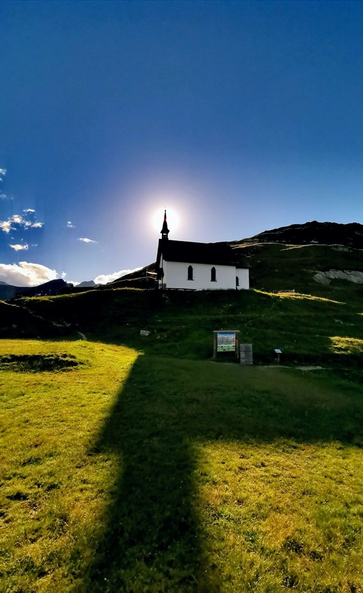
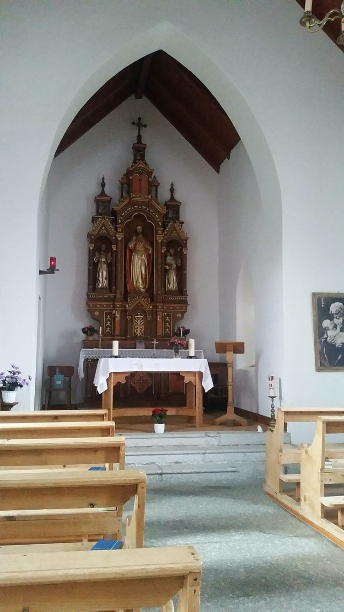

Die Engländer auf der Belalp
Wer den Aletschgletscher – oder, was davon noch übrig ist – bestaunen möchte, begibt sich meistens auf die Belalp oberhalb von Naters. Wenn man dort am Aletschbord steht, kann man gleich drei Dinge bestaunen:
- Die Rasanz, mit welcher der Eisgigant wegschmilzt (man meint, es sogar mit blossem Auge sehen zu können).
- Das Tennisfeld auf 2140 m.ü.M.
- Die wunderschöne Kapelle gleich neben dem Hotel Belalp.
Alle drei Aspekte sind miteinander verwoben. Die Pracht des grössten Gletschers der Alpen zog im 19. Jahrhundert sehr viele britische Touristen an. Gervas Klingele, ein Pionier des Tourismus, baute daher auf dem Aletschbord ein Hotel (1856/1857), das heute noch den Charme dieser «Engländer-Zeit» verströmt. Auf zwei Dinge konnte die British upper-class dieser Jahre nicht verzichten: Auf ihren Tennis und natürlich auch auf den anglikanischen Gottesdienst.
Die Kapelle auf der Belalp/Lüsga. (Bild: Gerd Dönni)
Der anglikanische Tempel
Im tiefkatholischen Wallis dieser Jahre – der Sonderbundskrieg (1847), in dem die liberal-protestantischen Kantone die konservativ-katholischen besiegten, war noch gar nicht so lange vorbei – war es undenkbar, dass die anglikanischen Gäste in eine katholische Messe gegangen wären, noch hätte die römisch-katholische Kirche ihnen eine Kapelle zur Verfügung gestellt. Somit baute der Hotelier Klingele kurzerhand eine neugotische Kapelle für seine Gäste (welche sich finanziell daran beteiligten). Die katholischen Einheimischen feierten ihre Messe in einem etwas schäbigen Dachzimmer einer Hütte, die Pinta genannt worden ist (und leider inzwischen abgerissen worden ist). Die Kapelle der Anglikaner wurde noch bis weit ins 20. Jahrhundert von den Oberwallisern «dr Tämpl» genannt, da man mit Kapelle und Kirche eben nur römisch-katholische Gebäude bezeichnen wollte. Die anglikanischen Gäste brachten denn auch ihren eigenen Pastor mit – Father Fairbanks. Ihm zur Ehre ist noch heute im Chor der Kapelle eine in elegantestem Englisch verfasste Gedenktafel zu lesen. Er habe seine Belalp über alles geliebt. Und sein bester Freund sei ein einheimischer Bergführer, Herr Walden, gewesen.
Die katholische Kapelle und ihre Priester
Als nach dem ersten Weltkrieg die Anzahl der englischen Gäste abnahm und erst recht während der Wirren des zweiten Weltkrieges, wurden keine anglikanischen Gottesdienste mehr dort abgehalten. Daher erlaubte Bischof Bieler (1881–1952) von Sitten den Gläubigen, ab 1941 katholische Messen in der Lüsger Kapelle zu feiern.
Der Natischer Berg gehört seit Menschengedenken zu den Pfründen des Kaplans von Naters. Kaplan Bammatter war denn einer der ersten, der in der Kapelle die Messe lesen durfte, bald gefolgt von Pater Erdmann (1898–1991). Dieser floh 1940 auf abenteuerlichen Wegen vor der Gestapo in die Schweiz, wo er Aufnahme fand. Später wurde dieser heligmässige Gottesmann von seinem Orden nach Blatten geschickt, um sein Lungenleiden zu kurieren. Und Pater Erdmann blieb denn auch gleich da und betreute jahrzehntelang die Kapellen von Blatten und Belalp. Letzterer hat er noch als 70jähriger eigenhändig ein neues Schindeldach verpasst. Als gelernter Kaufmann liebte er auch Zahlen und rechnete aus, dass er 48'000 Mal für diese Neubedachung den Hammer schwingen musste. Die Ergebnisse des zweiten Vatikanischen Konzils (1962–1965) verirrte sich übrigens nur sehr bedingt bis in diesen Winkel des Oberwallis, so dass von Pater Erdmann noch lange die Messe dort sogenannt «mit dem Rücken zum Volk» zelebriert wurde. Die Kommunionbank blieb, auf der man zum Kommunionempfang kniete, um so die Kommunion aus Ehrfurcht vor dem Leib Christi nicht stehend in die Hand, sondern nur auf die Zunge gelegt und kniend zu empfangen. Der Schreiber dieser Zeilen hat das in seiner Jugend noch so erlebt und durchaus geschätzt. Bei Pater Erdmann, bescheiden, liebenswürdig, unendlich fromm, war das authentisch.
Zur Belalp Kapelle gehörte dann auch Prof. Dr. Bischofsberger (1936–2012) dazu, ein blitzgescheiter Jesuit und Dozent für Medizintechnik an der Universität Uppsala. Seine Ferien verbrachte er immer auf der Belalp und als Merci las er den Gläubigen die Messe. Trotz der hohen Gelehrsamkeit des Paters waren die Predigten immer verständlich und die Kapelle gedrängt voll.
1982 ging die Kapelle aus dem Privatbesitz der Familie Klingele an die Pfarrei Naters über.
Die Kapelle auf der Belalp/Lüsga. (Bild: Gerd Dönni)
Die Kapelle heute
Die Kapelle wird weiter genutzt. Sie ist eine der beliebtesten Hochzeitskapellen des Oberwallis. Kaum ein Samstag, an dem nicht die Messnerin die Glocken läutet. Auf der Belalp zu heiraten braucht aber eine gute Kondition. Die Alpe ist autofrei und zu Fuss hat man von der Bahnstation bis zur Kapelle ohne weiteres eine halbe Stunde. Die Einheimischen machen sich gelegentlich einen Spass daraus, den mit den örtlichen Begebenheiten nicht vertrauten Gästen in high heels zuzuschauen, wie sie auf dem Schotterweg zur Kapelle staksen. Aber das spektakuläre Panorama versöhnt dann wieder mit dem verdrehten Fuss.
Die lichtdurchflutete Kapelle – in der nie eine Beerdigung, wohl aber viele Hochzeiten und früher auch Taufen stattfanden – schenkt jedem Besucher Kraft und öffnet das Herz wie auch die Augen, welche das atemberaubende Panorama zahlreicher Viertausender geniessen dürfen.
Dr. Gerd Dönni ist Prorektor am Kollegium Spiritus Sanctus in Brig.
Weitere Artikel von {{ author.author }} finden Sie hier:
Zur Vertiefung:
- Jossen, Erwin: Naters. Das grosse Dorf im Wallis, Visp 2000.